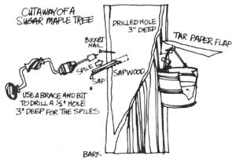
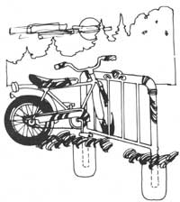
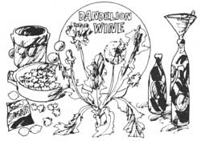

Here as a few more of THE Mother Earth News syndicated features which have appeared in 100 + newspapers over the past five years.
March is maple syrup time across the upper half of the eastern United States and, just for fun, you might like to tap a tree or two to see how it's done. You don't even need sugar maples, either: Syrup can be boiled down from the sap of any variety of maple - even the sycamore - and prospectors up in Canada's Peace River country often tap birch trees.
Pick trees at least 100 in diameter and tap 'em as shown here. The spile can be anything from a cutoff bean shooter to a four-inch length of green elderberry stem with the pith pushed out. Put two spiles in each tree and figure on 15 to 30 gallons of sap?which will boll down to one-half to one gallon of syrup?per tree.
Late afternoon Is the best time to collect the day's flow, and don't expect It to run on a regular schedule. Some days you'll be lucky to find the bottoms of your buckets wet ... and on others the palls will be running over before you get to them. That's the way Mother Nature works.
There's an awful lot of old bedsteads being scrapped In this country at the same time that bicycling Is enjoying a greatly Increased popularity. Wonderful An ideal recycling situation has been set up.
What you do, see, Is you take the headpiece off one of those antiquated Iron bed frames and you remove the casters and embed the legs of the assembly In cement and ... Prestol You've got yourself a bicycle rack that's every bit as good as an expensive store-bought model.
Lynne and Jim Sapling? a couple of young backto-the-landers-say, "A nice lady gave us a recipe for dandelion wine that's supposed to have health-giving properties. We made it and It's great! and here's the Spauldings' formula for one gallon.
Early in the morning when the dew is on the flowers, pick one gallon of perfect, open dandelion blossoms.
Put the blooms in a two-gallon or larger open crock and pour boiling water over them. Cover the crock with cheesecloth and let it sit at room temperature for three days. Then squeeze all the juice out of the flowers, throw them away, and save the liquid.
Pour the fluid into a big pot and add three pounds of brown sugar, three or four lemons (juice, skin, seeds and all, chopped up together), and three or four oranges (chopped up just like the lemons).
Put a top on the pot and boil the mixture for 30 minutes, cool it to lukewarm, pour the fluid into the crock, and add one and a half or two packages or tablespoons of yeast.
Cover the brew with cheesecloth and let It "work" for two or three weeks until the bubbling stops. Filter through fresh cheesecloth and then bottle. Save your "bottled sunshine" and uncap it on a gray, overcast January day. Presto! It's summer again!
|
 |
 |
 |